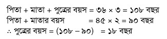
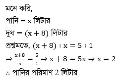
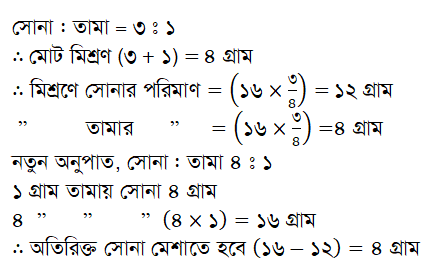

গাণিতিক যুক্তি (Mathematical Reasoning)পৃষ্ঠা: ৯০৭-৯১২
অনুপাত, সমানুপাত ও অংশীদারি কারবার (Ratio, Proportion & Partnership Business)
📊 বিসিএস প্রশ্ন বিশ্লেষণ ছক (অনুপাত, সমানুপাত ও অংশীদারি কারবার)
মোট প্রশ্ন: 23 টি
বিসিএস
প্রশ্ন
বিসিএস
প্রশ্ন
বিসিএস
প্রশ্ন
৪৯তম বিসিএস
1
৪৬তম বিসিএস
1
৪০তম বিসিএস
1
৩৯তম বিসিএস
1
৩৮তম বিসিএস
1
৩৭তম বিসিএস
1
৩৫তম বিসিএস
1
৩০তম বিসিএস
1
২৭তম বিসিএস
1
২৬তম বিসিএস
2
২৪তম বিসিএস
1
২৩তম বিসিএস
1
২২তম বিসিএস
1
২১তম বিসিএস
2
২০তম বিসিএস
2
১৭তম বিসিএস
1
১৫তম বিসিএস
1
১২তম বিসিএস
1
১১তম বিসিএস
1
১০তম বিসিএস
1
-
-
Part 1
প্রামাণ্য ইন্টারেক্টিভ রিভিশন নোট ও সূত্রাবলি
Authentic Interactive Revision Notes & Formulas Grounded in Past BCS Exams
১. অনুপাত ও সমানুপাতের বৈশিষ্ট্য ও সূত্র (Ratio & Proportion)
• অনুপাত: একই এককের দুটি রাশির ভাগফল। এর কোনো একক নেই।
• ক্রমিক সমানুপাত (Continued Proportion):
\(a : b = b : c \iff \frac{a}{b} = \frac{b}{c} \iff b^2 = ac \iff b = \sqrt{ac}\) (এখানে \(b\) হলো মধ্য সমানুপাতী)
• অনুপাত সমন্বয় (Merging Ratios):
যদি \(a : b = 2 : 3\) এবং \(b : c = 4 : 5\) হয়, তবে ‘দ’ পদ্ধতিতে গুণ করে: \(a : b : c = (2 \times 4) : (3 \times 4) : (3 \times 5) = 8 : 12 : 15\)।
২. মিশ্রণ ও অংশীদারি মুনাফা বণ্টন (Mixture & Partnership)
• অংশীদারি কারবার (Partnership):
ব্যবসায়ে লাভ বা ক্ষতি অংশীদারদের (মূলধন \(\times\) সময়) এর অনুপাতে বণ্টিত হয়:
\(\text{লাভের অনুপাত} = (P_1 \times t_1) : (P_2 \times t_2) : (P_3 \times t_3)\)
• মিশ্রণ নিয়ম (Rule of Alligation):
দুটি ভিন্ন মূল্যের উপাদান মিশিয়ে গড় মূল্যের মিশ্রণ তৈরি করতে পরিমাণের অনুপাত = \(\frac{\text{উচ্চ মূল্য} - \text{গড় মূল্য}}{\text{গড় মূল্য} - \text{নিম্ন মূল্য}}\)।
Part 2
বিগত বছরের প্রামাণ্য প্রশ্নব্যাংক ও ইন্টারঅ্যাক্টিভ কুইজ
Authentic Past Exam Question Engine with Step-by-Step Solutions
লাইভ স্কোর:০ / 23
প্রশ্ন 1৪৯তম বিসিএস
15 মিটার লম্বা একটি স্কেলের এক প্রান্তে 10 কেজি ওজন বাঁধা হয়েছে। একই প্রান্ত থেকে স্কেলের দৈর্ঘ্যের 3:2 অনুপাতে একটি পেরেক লাগানো আছে। অপর প্রান্তে কত কেজি ওজন দিলে স্কেলের ভারসাম্য থাকবে?
💡 বিশদ সমাধান:
ব্যাখ্যা: 15 মিটার লম্বা স্কেল 3 : 2 অনুপাতে পেরেক দ্বারা বিভক্ত।
∴ এক পাশের দৈর্ঘ্য \(\mathrm{ = \Big(15}\) এর \(\mathrm{3\over {3+2}}\Big)\) = 9 মিটার
এবং অপর পাশের দৈর্ঘ্য \(\mathrm{ = \Big(15}\)এর \(\mathrm{2\over {3+2}}\Big)\) = 6 মিটার
প্রশ্ন 2৪৬তম বিসিএস
১০০ হতে বড় দুইটি পূর্ণসংখ্যার যোগফল ৩০০ হলে, সংখ্যা দুইটির অনুপাত কত?
দুইটি সংখ্যার অনুপাত 7 : 5 এবং তাদের ল.সা.গু. 140 হলে সংখ্যা দুইটির গ.সা.গু. কত?
💡 বিশদ সমাধান:
ব্যাখ্যা: মনেকরি, সংখ্যা দুইটি 7x, 5x
এবং 7x, 5x এর ল.সা.গু. = 35x
এবং এদের গ.সা.গু. = x
∴ 35x = 140
\(\mathrm{\implies }\) x = 4
সুতরাং সংখ্যা দুইটির গ.সা.গু. 4
প্রশ্ন 5৩৮তম বিসিএস
দুটি সংখ্যার অনুপাত 2 : 3 এবং গ.সা.গু. 4 হলে বৃহত্তম সংখ্যাটি কত?
💡 বিশদ সমাধান:
ব্যাখ্যা: মনেকরি, সংখ্যাদ্বয় 2x, 3x
2x, 3x এর গ.সা.গু. = x
প্রশ্নমতে, x = 4
∴ বৃহত্তম সংখ্যা = 3x = 3×4 = 12
প্রশ্ন 6৩৭তম বিসিএস
261 টি আম তিন ভাইয়ের মধ্যে \({1 \over 3} : {1 \over 5} : {1 \over 9}\) অনুপাতে ভাগ করে দিলে প্রথম ভাই কতটি আম পাবে?
💡 বিশদ সমাধান:
ব্যাখ্যা: ভাইদের মধ্যে আমগুলোর অনুপাত \(\mathrm{=\frac{1}{3}:\frac{1}{5}:\frac{1}{9}}\)
অনুপাতের রাশিগুলোর যোগফল \(\mathrm{=\frac{1}{3}+\frac{1}{5}+\frac{1}{9}}\)
\(\mathrm{=\frac{15+9+5}{45}=\frac{29}{45}}\)
\(\mathrm{\therefore }\) প্রথম ভাই আম পাবে \(\mathrm{=261 \times \left(\frac{1}{3} \div \frac{29}{45}\right)}\)
\(\mathrm{=261 \times \frac{1}{3} \times \frac{45}{29}=135}\) টি
প্রশ্ন 7৩৫তম বিসিএস
60 লিটার ফলের রসে আম ও কমলার অনুপাত 2 : 1। কমলার রসের পরিমাণ কত লিটার বৃদ্ধি করলে অনুপাতটি 1 : 2 হবে?
ব্যাখ্যা: মনে করি, চতুর্থ সমানুপাতিক x
আমরা জানি,
সমানুপাতের ১ম রাশি \(\mathrm{\times}\) ৪র্থ রাশি = ২য় রাশি \(\mathrm{\times}\) ৩য় রাশি
⇒ ৪র্থ রাশি = \(\mathrm{\frac{২য় রাশি \times ৩য় রাশি}{১ম রাশি}}\)
⇒ \(\mathrm{x=\frac{৯ \times ৪}{৩} \therefore x=}\) ১২
প্রশ্ন 9২৭তম বিসিএস
পিতা, মাতা ও পুত্রের বয়সের গড় ৩৭ বছর। আবার পিতা ও পুত্রের বয়সের গড় ৩৫ বছর। মাতার বয়স কত?
💡 বিশদ সমাধান:
ব্যাখ্যা: পিতা, মাতা ও পুত্রের মোট বয়স = (৩৭ \(\mathrm{\times}\) ৩) বছর
= ১১১ বছর।
পিতা ও পুত্রের মোট বয়স = (৩৫ \(\mathrm{\times}\) ২) = ৭০ বছর।
\(\mathrm{\therefore }\) মাতার বয়স = (১১১ \(\mathrm{-}\) ৭০) = ৪১ বছর।
প্রশ্ন 10২৬তম বিসিএস
পিতা ও মাতার বয়সের গড় ৪৫ বছর। আবার পিতা, মাতা ও এক পুত্রের বয়সের গড় ৩৬ বছর। পুত্রের বয়স-
💡 বিশদ সমাধান:
ব্যাখ্যা:

প্রশ্ন 11২৬তম বিসিএস
একটি জারে দুধ ও পানির অনুপাত ৫ : ১। দুধের পরিমাণ যদি পানি অপেক্ষা ৮ লিটার বেশি হয় তবে পানির পরিমাণ কত?
💡 বিশদ সমাধান:
ব্যাখ্যা:

প্রশ্ন 12২৪তম বিসিএস
টিপুর বোনের বয়স টিপুর বয়সের ও তাঁর বাবার বয়সের মধ্য-সমানুপাতী। টিপুর বয়স ১২ বছর, বাবার বয়স ৪৮ বছর হলে বোনের বয়স কত?
💡 বিশদ সমাধান:
ব্যাখ্যা: সঠিক উত্তরটি বিসিএস পিএসসির প্রামাণ্য উত্তরমালা অনুযায়ী যাচাইকৃত।
প্রশ্ন 13২৩তম বিসিএস
৭২ কেজি ওজনবিশিষ্ট একটি মিশ্রণ A-এর ১৭ ভাগ, B-এর ৩ ভাগ এবং C-এর ৪ ভাগ দ্বারা গঠিত। মিশ্রণে B কতটুকু আছে?
💡 বিশদ সমাধান:
ব্যাখ্যা: মিশ্রণে, A : B : C \(\mathrm{=}\) ১৭ : ৩ : ৪
অনুপাতটির রাশিগুলোর যোগফল \(\mathrm{=}\) ১৭ \(\mathrm{+}\) ৩ \(\mathrm{+}\) ৪
\(\mathrm{=}\) ২৪
\(\mathrm{\therefore }\) B এর পরিমাণ \(\mathrm{=}\) \(\mathrm{\left(৭২ \times \frac{৩}{২৪}\right)}\) কেজি
\(\mathrm{=}\) ৯ কেজি
প্রশ্ন 14২২তম বিসিএস
৬০ মিটারবিশিষ্ট একটি বাঁশকে ৩ : ৭ : ১০ অনুপাত ভাগ করলে টুকরাগুলোর সাইজ কত?
💡 বিশদ সমাধান:
ব্যাখ্যা: অনুপাত গুলোর সমষ্টি ৩ + ৭ + ১০ = ২০
\(\mathrm{\therefore }\) প্রথম টুকরাটি হবে = ৬০ \(\mathrm{\times}\) \(\mathrm{\frac{৩}{২০}=}\) ৯ মিটার
২য় টুকরাটি হবে = ৬০ \(\mathrm{\times}\) \(\mathrm{\frac{৭}{২০}=}\) ২১ মিটার
৩য় টুকরাটি হবে = ৬০ \(\mathrm{\times \frac{১০}{২০}=}\) ৩০ মিটার
প্রশ্ন 15২১তম বিসিএস
একটি সোনার গহনার ওজন ১৬ গ্রাম। এতে সোনা ও তামার অনুপাত ৩ : ১। এতে কি পরিমাণ সোনা মেশালে অনুপাত ৪ : ১ হবে?
💡 বিশদ সমাধান:
ব্যাখ্যা: সোনা : তামা = ৩ : ১
\(\mathrm{\therefore }\) অনুপাতের রাশিগুলোর যোগফল = (৩ + ১) = ৪
\(\mathrm{\therefore }\) মিশ্রণে সোনার পরিমাণ = \(\mathrm{\left(১৬ \times \frac{৩}{৪}\right)}\) = ১২ গ্রাম
\(\mathrm{\therefore }\) মিশ্রণে তামার পরিমাণ = \(\mathrm{\left(১৬ \times \frac{১}{৪}\right)}\) = ৪ গ্রাম
মনে করি,
\(\mathrm{x}\) গ্রাম সোনা মেশালে সোনা ও তামার অনুপাত ৪ : ১ হবে।
প্রশ্নমতে, (১২ \(\mathrm{+ x}\) ) : ৪ \(\mathrm{=}\) ৪ : ১
\(\mathrm{\implies }\) \(\mathrm{\frac{১২+x}{৪}= \frac{৪}{১}}\)
\(\mathrm{\implies }\) ১২ \(\mathrm{+ x=}\) ১৬
\(\mathrm{\therefore x=}\) ৪ গ্রাম
প্রশ্ন 16২১তম বিসিএস
১,০০০ টাকা ক ও খ ১ : ৪ অনুপাতে ভাগ করে নেয়। খ-এর অংশ সে এবং তার মা ও মেয়ের মধ্যে ২ : ১ : ১ অনুপাতে ভাগ করে। মেয়ে কত টাকা পাবে?
💡 বিশদ সমাধান:
ব্যাখ্যা: ক : খ = ১ : ৪
অনুপাতের যোগফল = (১ + ৪) = ৫
∴ খ পায় \(\mathrm{=}\) \(\mathrm{\left(১০০০ এর \frac{৪}{৫}\right)}\) = ৮০০ টাকা
খ : মা : মেয়ে = ২ : ১ : ১
অনুপাতের যোগফল (২ + ১ + ১) = ৪
∴ মেয়ে পায় = \(\mathrm{\left(৮০০ এর \frac{১}{৪}\right)}\) = ২০০ টাকা।
প্রশ্ন 17২০তম বিসিএস
পিতার বর্তমান বয়স পুত্রের বয়সের চারগুণ। ৬ বছর পূর্বে পিতার বয়স পুত্রের বয়সের দশগুণ ছিল। পিতা ও পুত্রের বর্তমান বয়স কত?
💡 বিশদ সমাধান:
ব্যাখ্যা: ধরি, পুত্রের বর্তমান বয়স \(\mathrm{x}\) বছর
পিতার বর্তমান বয়স \(\mathrm{৪x}\) বছর।
প্রশ্নমতে, ১০ ( \(\mathrm{x-}\) ৬) \(\mathrm{=}\) ৪ \(\mathrm{x-}\) ৬
\(\mathrm{\implies ১০x-৬০=৪x-৬}\)
\(\mathrm{\implies ১০x-৪x=৬০-৬}\)
\(\mathrm{\implies ৬x=৫৪}\)
\(\mathrm{\therefore x=}\) ৯
\(\mathrm{\therefore }\) পিতার বর্তমান বয়স ৪ \(\mathrm{\times}\) ৯ = ৩৬ বছর
এবং পুত্রের বর্তমান বয়স ৯ বছর।
প্রশ্ন 18২০তম বিসিএস
দুটি সংখ্যার অনুপাত ৫∶৮ । উভয়ের সাথে ২ যোগ করলে অনুপাতটি ২∶৩ হয়। সংখ্যা দুটি কি কি?
💡 বিশদ সমাধান:
ব্যাখ্যা: ধরি, সংখ্যা দুটি ৫ \(\mathrm{x}\) ও ৮ \(\mathrm{x}\)
প্রশ্নমতে, (৫x + ২) \(\mathrm{:}\) (৮x + ২) = ২ : ৩
⇒ \(\mathrm{\frac{৫x+২}{৮x+২}=\frac{২}{৩}}\)
⇒ ১৬x + ৪ = ১৫x + ৬
\(\mathrm{\therefore }\) x = ২
সংখ্যাদুটি যথাক্রমে, ৫x = ৫ × ২ = ১০
এবং ৮x = ৮ × ২ = ১৬।
প্রশ্ন 19১৭তম বিসিএস
একটি সোনার গহনার ওজন ১৬ গ্রাম । এতে সোনা ও তামার অনুপাত ৩ : ১ । এতে কি পরিমাণ সোনা মেশালে অনুপাত ৪ : ১ হবে?
💡 বিশদ সমাধান:
ব্যাখ্যা:

প্রশ্ন 20১৫তম বিসিএস
৬৪ কিলোগ্রাম বালি ও পাথরের টুকরোর মিশ্রণে বালির পরিমাণ ২৫%। কত কিলোগ্রাম বালি মিশালে নতুন মিশ্রণে পাথর টুকরোর পরিমাণ ৪০% হবে?
💡 বিশদ সমাধান:
ব্যাখ্যা: বালি ও পাথরের মিশ্রণে বালির পরিমাণ,
= ৬৪ \(\mathrm{\times}\) ২৫% = \(\mathrm{\frac{৬৪ \times ২৫}{১০০}}\) = ১৬ কি.গ্রা.
\(\mathrm{\therefore }\) পাথরের পরিমাণ = (৬৪ – ১৬) কি.গ্রা. = ৪৮ কি.গ্রা.
মনে করি, x কিলোগ্রাম বালি মিশালে পাথরের টুকরোর পরিমাণ ৪০% হবে।
তাহলে, \(\mathrm{\frac{(১৬ + x)}{৪৮}=\frac{৬০}{৪০}}\)
\(\mathrm{\implies \frac{(১৬ + x)}{৪৮}=\frac{৩}{২}}\)
\(\mathrm{\implies ১৬+x=৩ \times ২৪}\)
\(\mathrm{\implies x=৭২-১৬}\)
\(\mathrm{\therefore x=৫৬}\)
\(\mathrm{\therefore }\) ৫৬ কি.গ্রা. বালি মেশাতে হবে।
প্রশ্ন 21১২তম বিসিএস
৫ : ১৮, ৭ : ২ এবং ৩ : ৬ এর মিশ্র অনুপাত কত?
💡 বিশদ সমাধান:
ব্যাখ্যা: ৫ : ১৮, ৭ : ২; ৩ : ৬ ⇒ ১ : ২
\(\mathrm{\therefore }\) মিশ্র অনুপাত = (৫ \(\mathrm{\times}\) ৭ \(\mathrm{\times}\) ১) : (১৮ \(\mathrm{\times}\) ২ \(\mathrm{\times}\) ২) = ৩৫ : ৭২
প্রশ্ন 22১১তম বিসিএস
একটি পাত্রে দুধ ও পানির অনুপাত ৫ : ২। যদি পানি অপেক্ষা দুধের পরিমাণ ৬ লিটার বেশি হয় পানির পরিমাণ-
💡 বিশদ সমাধান:
ব্যাখ্যা: ধরি, দুধের পরিমাণ ৫x লিটার
এবং পানির পরিমাণ ২x লিটার
শর্তমতে, (৫x \(\mathrm{-}\) ২x) = ৬
\(\mathrm{\implies }\) ৩x = ৬
\(\mathrm{\implies }\) x = ২
⸫ ২x = ৪ লিটার
\(\mathrm{\therefore }\) পানির পরিমাণ ৪ লিটার।
প্রশ্ন 23১০তম বিসিএস
৬০ লিটার কেরোসিনের ও পেট্রোলের মিশ্রণের অনুপাত ৭ : ৩। ঐ মিশ্রণে কত লিটার পেট্রোল মিশালে অনুপাত ৩ : ৭ হবে ?